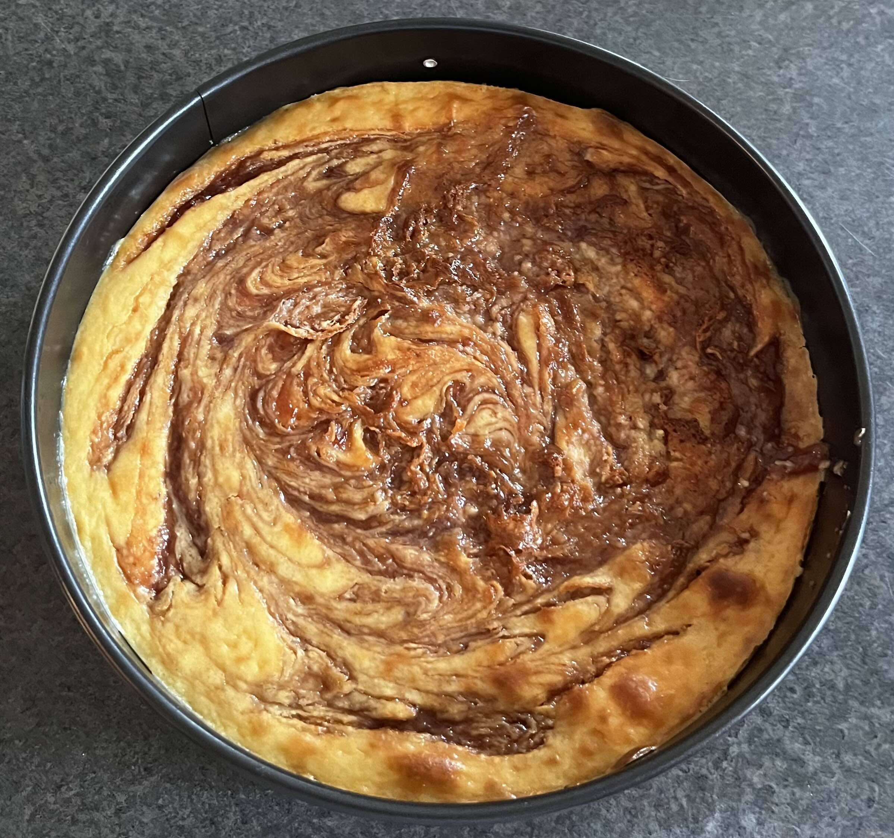

Cheesecake

Description
Above we have a delicious homemade lemon cheesecake with a strawberry rhubarb swirl that is hard to mess up
even for the most untalented home cook. It includes a gluten-free oreo crust making the whole cheesecake
gluten-free. We hope you'll give our recipe a try!
NOTE: While our cheesecake is gluten-free,
it is NOT dairy free, sugar free or vegan.
Ingredients
- 6 tablespoons of salted, melted butter
- 1.25 cups of gluten-free Oreos (no cream)
- 24 oz of cream cheese, softened
- 2 large eggs
- 1 (14 oz) can of sweetened condensed milk
- 1 teaspoon of pure vanilla extract
- 1 tablespoon of pure lemon juice (optional)
- 1 can of strawberry rhubarb preserves or conserve (optional)
Steps
- Brush melted butter on a springform pan that can fit in your air fryer (7 or 8 inches recommended)
- Mix the crushed Oreos with melted butter until the mixture has the texture of coarse meal,
transfer the mixture to the springform pan and press evenly with a spoon to form a crust
- Using a stand or hand mixer, beat the cream cheese on medium until creamy and smooth, 1 to 2 minutes.
Add the eggs, condensed milk, vanilla, lemon juice and beat on medium speed until completely smooth, 1 to 2 minutes.
- Put the pan with the crust in the air fryer and pour the cream cheese mixture over the crust.
It should almost reach the rim of the pan.
- Pour the strawberry rhubarb conserve onto the cheese cake in blobs. Then using a knife or chopstick swirl the blobs.
Be careful not to mix the strawberry rhubarb in too much.
- Bake the cheesecake at 300 degrees Fahrenheit until the top is lightly browned and the center jiggles slightly.
About 25 to 35 minutes. It may take a little more or less time depending on the air fryer.
- Carefully remove the springform pan from the air fryer, let it sit at room temperature for about 1 hour,
and then cool it in the refrigerator for 6 to 8 hours. When ready to eat, remove the cheesecake from the pan.
Slice with a warm knife, wiping it clean between cuts.
Back to Home Page